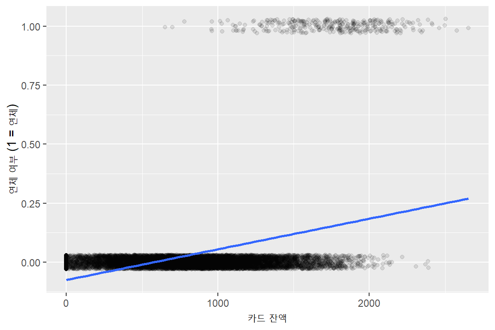
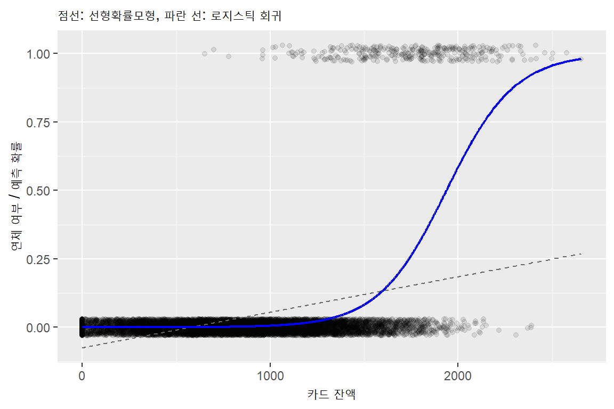
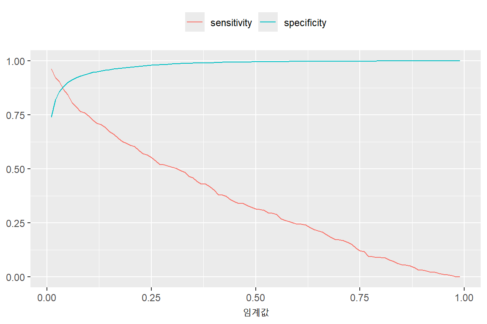
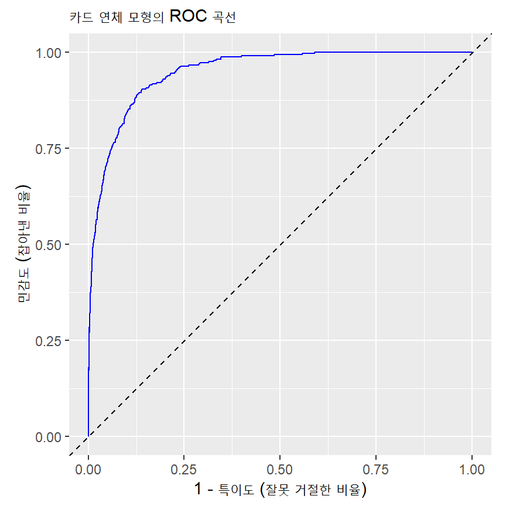
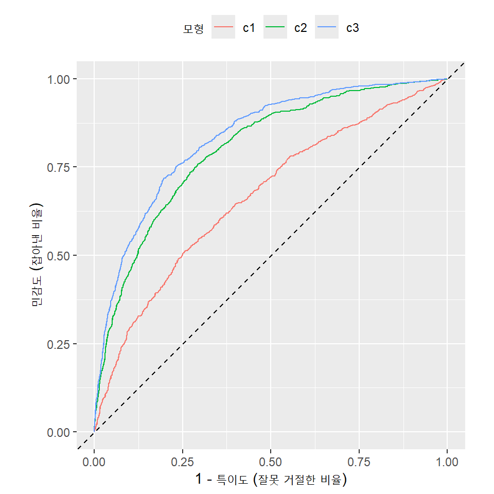

library(tidyverse)
library(janitor)
library(skimr)
library(broom)
library(modeldata) # credit_data (지난주에 설치)11주차. 예측하기 (2): 이산적 결과 변수
1 도입
- 이번 주의 질문: 결과가 숫자가 아니라 “예/아니오”일 때 무엇이 달라지는가?
- 이 고객이 카드 대금을 연체할까? 이 대출 신청을 승인해도 될까? 이 메일은 스팸일까?
- 결과 변수가 두 값(0과 1) 중 하나만 갖는 경우: 이산적(discrete) 결과 변수 중에서도 이항(binary) 결과 변수
- 핵심 아이디어
- 모형이 예측하는 것은 “예/아니오”가 아니라 “예”일 확률(probability)
- 확률을 “예/아니오”라는 결정으로 바꾸는 기준(임계값)은 통계가 아니라 의사결정의 문제
- 지난주의 RMSE 대신 쓸 오차 지표가 필요함
- 지난주와 같은 점
- 예측력은 모형을 만들 때 쓰지 않은 자료로 측정
- 기준선(baseline) 모형과 비교
- 모형은 교차검증으로 고름
2 확률을 예측하기
2.1 데이터: 신용카드 연체
- Default.csv: 신용카드 고객 10,000명.
ISLR2패키지에 들어 있는Default를 csv로 저장한 것default: 연체 여부 (Yes, No)student: 학생 여부 (Yes, No)balance: 매달 결제한 뒤 카드에 남아 있는 평균 잔액income: 소득- 실제 고객 자료가 아니라 교재 저자들이 만든 모의(simulated) 자료. 금액의 단위는 설명되어 있지 않음.
default <- read_csv("data/Default.csv")
default |>
skim()| Name | default |
| Number of rows | 10000 |
| Number of columns | 4 |
| _______________________ | |
| Column type frequency: | |
| character | 2 |
| numeric | 2 |
| ________________________ | |
| Group variables | None |
Variable type: character
| skim_variable | n_missing | complete_rate | min | max | empty | n_unique | whitespace |
|---|---|---|---|---|---|---|---|
| default | 0 | 1 | 2 | 3 | 0 | 2 | 0 |
| student | 0 | 1 | 2 | 3 | 0 | 2 | 0 |
Variable type: numeric
| skim_variable | n_missing | complete_rate | mean | sd | p0 | p25 | p50 | p75 | p100 | hist |
|---|---|---|---|---|---|---|---|---|---|---|
| balance | 0 | 1 | 835.37 | 483.71 | 0.00 | 481.73 | 823.64 | 1166.31 | 2654.32 | ▆▇▅▁▁ |
| income | 0 | 1 | 33516.98 | 13336.64 | 771.97 | 21340.46 | 34552.64 | 43807.73 | 73554.23 | ▂▇▇▅▁ |
default는 문자(“Yes”, “No”)로 읽힘. 연체이면 1, 아니면 0인 숫자 변수로 바꿈default == "Yes"는 TRUE/FALSE,as.integer()는 TRUE를 1, FALSE를 0으로 바꿈
default <- default |>
mutate(default = as.integer(default == "Yes"))
default |>
tabyl(default) default n percent
0 9667 0.9667
1 333 0.0333- 연체한 고객은 333명, 3.33%.
2.2 선형확률모형(linear probability model)
- 8주차의
lm()을 0/1 결과 변수에 그대로 쓰면: 예측값을 “연체할 확률”로 읽을 수 있음- 0/1 변수의 평균은 1의 비율이므로, \(x\)가 주어졌을 때 \(y\)의 평균은 \(y = 1\)일 확률
fit_lpm <- lm(default ~ balance, data = default)
tidy(fit_lpm)# A tibble: 2 × 5
term estimate std.error statistic p.value
<chr> <dbl> <dbl> <dbl> <dbl>
1 (Intercept) -0.0752 0.00335 -22.4 1.26e-108
2 balance 0.000130 0.00000347 37.4 2.77e-286default |>
mutate(pred = predict(fit_lpm)) |>
summarize(min_pred = min(pred),
max_pred = max(pred),
share_negative = mean(pred < 0))# A tibble: 1 × 3
min_pred max_pred share_negative
<dbl> <dbl> <dbl>
1 -0.0752 0.270 0.312- 예측값의 31%가 0보다 작음: 음의 확률을 해석하기 어렵다는 문제
default |>
ggplot(aes(x = balance, y = default)) +
geom_jitter(height = 0.03, alpha = 0.1) +
geom_smooth(method = "lm", se = FALSE) +
labs(x = "카드 잔액", y = "연체 여부 (1 = 연체)")
geom_jitter(height = 0.03): 점을 위아래로 조금씩 흔들어 겹치지 않게 그림. 실제 값은 0 또는 1
2.3 로지스틱 회귀(logistic regression)
- 로지스틱 회귀 모형
\[ \Pr(y = 1 \mid x) = \frac{1}{1 + e^{-(b_0 + b_1 x)}} \]
괄호 안의 \(b_0 + b_1 x\)는 어떤 값이든 될 수 있지만, 전체 값은 항상 0과 1 사이
\(b_1 > 0\)이면 \(x\)가 클수록 확률이 커지고, \(b_1 < 0\)이면 작아짐
glm(y ~ x, family = binomial, data = )glm: 일반화 선형모형(generalized linear model).lm()과 사용법이 거의 같음family = binomial: 결과 변수가 0/1이라는 뜻. 빠뜨리면lm()과 같은 결과가 나옴
fit_bal <- glm(default ~ balance, family = binomial, data = default)
tidy(fit_bal)# A tibble: 2 × 5
term estimate std.error statistic p.value
<chr> <dbl> <dbl> <dbl> <dbl>
1 (Intercept) -10.7 0.361 -29.5 3.62e-191
2 balance 0.00550 0.000220 25.0 1.98e-137- 잔액의 계수가 양수: 잔액이 클수록 연체할 확률이 큼
- 계수의 크기를 해석하는 방법은 이 강의에서는 다루지 않음
2.4 predict()로 확률 구하기
predict(fit, newdata = , type = "response"): 확률을 예측
new_balance <- tibble(balance = c(1000, 1500, 2000, 2500))
new_balance |>
mutate(prob = predict(fit_bal, newdata = new_balance, type = "response"))# A tibble: 4 × 2
balance prob
<dbl> <dbl>
1 1000 0.00575
2 1500 0.0829
3 2000 0.586
4 2500 0.957 - 잔액이 1,000이면 연체 확률 0.6%, 2,000이면 59%
- 주의:
type = "response"를 빼면 확률이 아니라 괄호 안의 값 \(b_0 + b_1 x\)가 나옴
predict(fit_bal, newdata = new_balance) # 확률이 아님 (음수도 나옴) 1 2 3 4
-5.1524137 -2.4029552 0.3465032 3.0959617 - 선형확률모형과 로지스틱 회귀의 비교
default |>
mutate(lpm = predict(fit_lpm),
logit = predict(fit_bal, type = "response")) |>
ggplot(aes(x = balance)) +
geom_jitter(aes(y = default), height = 0.03, alpha = 0.1) +
geom_line(aes(y = lpm), color = "gray40", linetype = "dashed") +
geom_line(aes(y = logit), color = "blue", linewidth = 0.8) +
labs(x = "카드 잔액", y = "연체 여부 / 예측 확률",
subtitle = "점선: 선형확률모형, 파란 선: 로지스틱 회귀")
- 로지스틱 회귀의 예측 확률은 잔액이 작은 구간에서 0에 붙어 있다가 1,500 근처부터 빠르게 커짐
3 확률에서 결정으로: 임계값(threshold)
3.1 혼동행렬(confusion matrix)
- 이제 잔액, 소득, 학생 여부를 모두 넣은 모형을 사용
fit_def <- glm(default ~ balance + income + student, family = binomial, data = default)
default_pred <- default |>
mutate(prob = predict(fit_def, type = "response"))- 카드사는 확률이 아니라 결정(한도를 줄일지 말지)이 필요함
- 가장 단순한 규칙: 예측 확률이 0.5보다 크면 “연체”로 예측
default_pred <- default_pred |>
mutate(pred = as.integer(prob > 0.5))
default_pred |>
tabyl(default, pred) default 0 1
0 9627 40
1 228 105- 실제(행) × 예측(열)의 2×2 표: 혼동행렬
| 예측: 정상 (0) | 예측: 연체 (1) | |
|---|---|---|
| 실제: 정상 (0) | 맞음 | 잘못 거절 |
| 실제: 연체 (1) | 놓침 | 맞음 |
- 정확도(accuracy): 맞게 예측한 비율
default_pred |>
summarize(accuracy = mean(pred == default))# A tibble: 1 × 1
accuracy
<dbl>
1 0.973- 이 절에서는 개념을 보이기 위해 모형을 추정한 자료에서 바로 계산함. 모형을 평가할 때는 지난주처럼 추정에 쓰지 않은 자료를 사용해야 함 (4절)
3.2 정확도의 함정: 기준선과 비교
- 정확도 97.3%는 높아 보이지만, 비교 대상이 필요함
- 가장 단순한 예측: 모든 고객을 “정상”으로 예측. 연체율이 3.33%이므로 정확도는 96.7%
default_pred |>
summarize(accuracy_model = mean(pred == default),
accuracy_baseline = mean(default == 0))# A tibble: 1 × 2
accuracy_model accuracy_baseline
<dbl> <dbl>
1 0.973 0.967- 모형은 기준선보다 0.6%p 나을 뿐
- 혼동행렬을 다시 보면: 실제 연체자 333명 중 105명만 연체로 예측했고 228명은 놓침
- 결과가 드물 때는 정확도만으로 모형을 평가할 수 없음
3.3 민감도(sensitivity)와 특이도(specificity)
- 두 종류의 오류를 따로 봄
- 민감도: 실제 연체자 중 연체로 예측한 비율 (연체자를 잡아내는 능력)
- 특이도: 실제 정상 고객 중 정상으로 예측한 비율 (정상 고객을 괴롭히지 않는 능력)
default_pred |>
summarize(sensitivity = mean(pred[default == 1] == 1),
specificity = mean(pred[default == 0] == 0))# A tibble: 1 × 2
sensitivity specificity
<dbl> <dbl>
1 0.315 0.996pred[default == 1]:default가 1인 행의pred만 골라냄 (base R의 인덱싱)- 특이도는 99.6%이지만 민감도는 31.5%
3.4 임계값을 바꾸면
- 임계값을 0.5가 아니라 더 낮게 잡으면 연체로 예측하는 고객이 늘어남
- 민감도는 올라가고 특이도는 내려감
- 임계값을 0.01부터 0.99까지 바꾸어 가며 계산
thr_result <- tibble(threshold = seq(0.01, 0.99, by = 0.01),
accuracy = NA, sensitivity = NA, specificity = NA,
n_miss = NA, n_reject = NA)
y <- default_pred$default
for (i in 1:nrow(thr_result)) {
pred <- as.integer(default_pred$prob > thr_result$threshold[i])
thr_result$accuracy[i] <- mean(pred == y)
thr_result$sensitivity[i] <- mean(pred[y == 1] == 1)
thr_result$specificity[i] <- mean(pred[y == 0] == 0)
thr_result$n_miss[i] <- sum(y == 1 & pred == 0) # 놓친 연체자 수
thr_result$n_reject[i] <- sum(y == 0 & pred == 1) # 잘못 거절한 정상 고객 수
}
thr_result |>
filter(threshold %in% c(0.05, 0.1, 0.2, 0.3, 0.5))# A tibble: 4 × 6
threshold accuracy sensitivity specificity n_miss n_reject
<dbl> <dbl> <dbl> <dbl> <int> <int>
1 0.05 0.898 0.844 0.900 52 965
2 0.2 0.959 0.610 0.971 130 277
3 0.3 0.970 0.508 0.986 164 137
4 0.5 0.973 0.315 0.996 228 40- 임계값을 0.5에서 0.2로 낮추면 민감도가 31.5%에서 61.0%로 오르고, 특이도는 99.6%에서 97.1%로 내려감
- 두 종류의 오류를 동시에 줄일 수는 없음 → 어느 쪽을 얼마나 줄일지 정해야 함
thr_result |>
pivot_longer(c(sensitivity, specificity), names_to = "measure", values_to = "value") |>
ggplot(aes(x = threshold, y = value, color = measure)) +
geom_line() +
labs(x = "임계값", y = NULL, color = NULL) +
theme(legend.position = "top")
4 비용으로 임계값 정하기
4.1 두 오류의 비용은 다르다
- 카드사 입장에서
- 연체할 고객을 정상으로 판단(놓침): 받지 못한 대금만큼 손실
- 정상 고객을 연체로 판단(잘못 거절): 한도를 줄였으므로 그 고객에게서 얻을 수수료와 이자 수입을 잃음
- 보통 놓침의 비용이 훨씬 큼
- 가정: 놓침 1건의 비용이 잘못 거절 1건의 비용의 5배
\[ \text{총비용} = 5 \times (\text{놓침의 수}) + 1 \times (\text{잘못 거절의 수}) \]
thr_result <- thr_result |>
mutate(cost = 5 * n_miss + 1 * n_reject)
thr_result |>
slice_min(cost)# A tibble: 1 × 7
threshold accuracy sensitivity specificity n_miss n_reject cost
<dbl> <dbl> <dbl> <dbl> <int> <int> <dbl>
1 0.21 0.962 0.604 0.974 132 253 913slice_min(변수): 그 변수가 가장 작은 행- 총비용이 가장 작은 임계값은 0.21. 0.5일 때(1,180)보다 총비용이 약 23% 작음
- 설명변수를 쓰지 않는 기준선: 모두 승인하면(놓침 333건) 총비용은 5 \(\times\) 333 = 1,665, 모두 거절하면 9,667
thr_result |>
ggplot(aes(x = threshold, y = cost)) +
geom_line() +
geom_vline(xintercept = 0.5, linetype = "dotted") +
labs(x = "임계값", y = "총비용 (잘못 거절 1건 = 1)",
caption = "점선: 임계값 0.5")
- 곡선의 바닥이 평평함: 0.15에서 0.25 사이는 총비용이 913~935로, 어느 값을 골라도 크게 다르지 않음
4.2 비용 비율이 바뀌면
- 비용 비율을 10배, 20배로 가정하면 최적 임계값은 0.10, 0.05로 내려감. 정답인 임계값은 자료가 아니라 비용 구조가 정함
- 참고: 예측 확률이 정확하다면 비용 비율이 \(c\)일 때 임계값은 1/(1+c). 5배이면 1/6 \(\approx\) 0.17로, 자료에서 찾은 0.21과 가까움
5 신용 심사 자료: 교차검증과 ROC 곡선
5.1 데이터: 대출 심사 결과
credit_data(modeldata 패키지): 대출을 받은 4,454명의 결과- 스페인의 한 금융회사 자료로 알려져 있음. 금액 변수의 단위는 자료 설명에 나와 있지 않음
| 변수 | 내용 |
|---|---|
Status |
대출 결과: bad (부실), good (정상) |
Seniority |
현 직장 근속연수 |
Home |
주거 형태 (owner, rent, parents, priv, other, ignore) |
Time |
대출 기간 (개월) |
Age |
나이 |
Marital |
혼인 상태 (married, single, separated, widow, divorced) |
Records |
기록 존재 여부 (no, yes). 자료 설명에는 “existence of records”로만 되어 있음 |
Job |
고용 형태 (fixed, freelance, partime, others) |
Expenses |
지출 |
Income |
소득 |
Assets |
자산 |
Debt |
부채 |
Amount |
대출액 |
Price |
구매하려는 물건의 가격 |
credit_data |>
skim()| Name | credit_data |
| Number of rows | 4454 |
| Number of columns | 14 |
| _______________________ | |
| Column type frequency: | |
| factor | 5 |
| numeric | 9 |
| ________________________ | |
| Group variables | None |
Variable type: factor
| skim_variable | n_missing | complete_rate | ordered | n_unique | top_counts |
|---|---|---|---|---|---|
| Status | 0 | 1 | FALSE | 2 | goo: 3200, bad: 1254 |
| Home | 6 | 1 | FALSE | 6 | own: 2107, ren: 973, par: 783, oth: 319 |
| Marital | 1 | 1 | FALSE | 5 | mar: 3241, sin: 977, sep: 130, wid: 67 |
| Records | 0 | 1 | FALSE | 2 | no: 3681, yes: 773 |
| Job | 2 | 1 | FALSE | 4 | fix: 2805, fre: 1024, par: 452, oth: 171 |
Variable type: numeric
| skim_variable | n_missing | complete_rate | mean | sd | p0 | p25 | p50 | p75 | p100 | hist |
|---|---|---|---|---|---|---|---|---|---|---|
| Seniority | 0 | 1.00 | 7.99 | 8.17 | 0 | 2.00 | 5 | 12.0 | 48 | ▇▃▁▁▁ |
| Time | 0 | 1.00 | 46.44 | 14.66 | 6 | 36.00 | 48 | 60.0 | 72 | ▁▂▅▃▇ |
| Age | 0 | 1.00 | 37.08 | 10.98 | 18 | 28.00 | 36 | 45.0 | 68 | ▆▇▆▃▁ |
| Expenses | 0 | 1.00 | 55.57 | 19.52 | 35 | 35.00 | 51 | 72.0 | 180 | ▇▃▁▁▁ |
| Income | 381 | 0.91 | 141.69 | 80.75 | 6 | 90.00 | 125 | 170.0 | 959 | ▇▂▁▁▁ |
| Assets | 47 | 0.99 | 5403.98 | 11574.42 | 0 | 0.00 | 3000 | 6000.0 | 300000 | ▇▁▁▁▁ |
| Debt | 18 | 1.00 | 343.03 | 1245.99 | 0 | 0.00 | 0 | 0.0 | 30000 | ▇▁▁▁▁ |
| Amount | 0 | 1.00 | 1038.92 | 474.55 | 100 | 700.00 | 1000 | 1300.0 | 5000 | ▇▆▁▁▁ |
| Price | 0 | 1.00 | 1462.78 | 628.13 | 105 | 1117.25 | 1400 | 1691.5 | 11140 | ▇▁▁▁▁ |
- 주의:
Status의 수준(level) 순서는 bad, goodglm()은 두 번째 수준을 1로 보므로Status를 그대로 넣으면 good일 확률을 모형화함- 부실이면 1인 변수
bad를 따로 만들어 사용
credit <- credit_data |>
mutate(bad = as.integer(Status == "bad")) |>
select(-Status)
credit |>
tabyl(bad) bad n percent
0 3200 0.7184553
1 1254 0.2815447- 부실 비율 28.2%. 모두 “정상”으로 예측하는 기준선의 정확도는 71.8%
5.2 결측치
- 결측이 하나라도 있는 행이 415개. 대부분
Income의 결측 (381개)
credit |>
mutate(any_na = !complete.cases(credit)) |>
group_by(any_na) |>
summarize(n = n(), bad_rate = mean(bad))# A tibble: 2 × 3
any_na n bad_rate
<lgl> <int> <dbl>
1 FALSE 4039 0.254
2 TRUE 415 0.549complete.cases(): 결측이 하나도 없는 행이면 TRUE- 결측이 있는 행의 부실 비율은 54.9%로, 결측이 없는 행(25.4%)의 두 배가 넘음
- 소득을 밝히지 않은 신청자가 더 위험할 수 있음
- 결측 행을 빼면 남은 자료는 원래 자료보다 덜 위험한 사람들로 구성됨
- 다만 편의상 이번 주에는 결측 행을 빼고 사용
credit <- credit |>
drop_na()
nrow(credit)[1] 4039결측 행을 뺀 뒤의 부실 비율은 25.4%. 이제 기준선의 정확도는 74.6%
주거 형태 중
ignore는 19명뿐. 지난주의 동네처럼, 교차검증에서 학습 자료에 이 범주가 없으면 예측할 수 없으므로other와 묶어 둠
credit <- credit |>
mutate(Home = fct_lump_min(Home, min = 30, other_level = "other"))
credit |>
count(Home) Home n
1 owner 1930
2 parents 721
3 priv 227
4 rent 883
5 other 2785.3 정확도 대신: ROC 곡선
- 개념은 익숙한 카드 연체 모형으로 먼저 보고, 교차검증 소절에서 신용 심사 모형에 적용함
- 정확도로 모형을 비교하려면 임계값을 하나 정해야 함. 그런데 임계값은 비용 구조에 따라 달라짐
- 임계값을 정하지 않고 모형을 비교하는 방법: 임계값을 0부터 1까지 모두 바꾸어 보는 것
- ROC 곡선(receiver operating characteristic curve): 임계값을 바꾸면서 가로축에 1 − 특이도(정상 고객을 잘못 거절한 비율), 세로축에 민감도(부실을 잡아낸 비율)를 찍어 이은 곡선
- 3절의
for루프와 같은 계산을 반복한 것 - 다만 3절의 코드를 사용하면 이 모형에서는 곡선 중간에 근처에서 끊기게 되어 아래 함수를 사용하였음
- 함수를 정의한 부분은 이해하지 않아도 됨
- 3절의
roc_table <- function(y, prob) {
thr <- c(0, sort(unique(prob)), 1)
tibble(threshold = thr,
sensitivity = map_dbl(thr, \(t) mean(prob[y == 1] > t)),
specificity = map_dbl(thr, \(t) mean(prob[y == 0] <= t)))
}roc_table(default_pred$default, default_pred$prob) |>
ggplot(aes(x = 1 - specificity, y = sensitivity)) +
geom_line(color = "blue") +
geom_abline(linetype = "dashed") +
coord_equal() +
labs(x = "1 - 특이도 (잘못 거절한 비율)", y = "민감도 (잡아낸 비율)",
subtitle = "카드 연체 모형의 ROC 곡선")
- 왼쪽 아래(임계값 1: 아무도 거절하지 않음)에서 오른쪽 위(임계값 0: 모두 거절)로 가는 곡선
- 점선(대각선): 예측 확률을 무작위로 주는 모형. 기준선
- 모두에게 같은 확률을 주는 기준선 모형(
c0)도 이 선이 됨: 아무도 거절하지 않는 판정(왼쪽 아래)과 모두 거절하는 판정(오른쪽 위)만 가능하기 때문
- 모두에게 같은 확률을 주는 기준선 모형(
- 곡선이 왼쪽 위로 붙을수록 좋은 모형: 정상 고객을 조금만 거절해도 부실을 많이 잡아냄
5.4 AUC
- AUC(area under the curve): ROC 곡선 아래의 면적. 0.5(대각선)이면 무작위 예측과 같고, 1이면 완벽
- AUC의 의미: 실제 연체한 사람과 실제 정상인 사람을 한 명씩 짝지은 모든 쌍 중에서, 모형이 연체한 사람에게 더 높은 확률을 준 쌍의 비율
- 모형이 사람들의 순서를 얼마나 잘 매기는지를 나타냄. 임계값과 상관없음
- 아래 함수로 계산. 함수를 정의한 부분은 이해하지 않아도 됨
auc <- function(y, prob) {
r <- rank(prob)
n1 <- sum(y == 1)
n0 <- sum(y == 0)
(sum(r[y == 1]) - n1 * (n1 + 1) / 2) / (n1 * n0)
}
auc(default_pred$default, default_pred$prob)[1] 0.9495581- 카드 연체 모형의 AUC는 0.95. 위 그림의 곡선 아래 면적과 같은 값
5.5 5-겹 교차검증
- 지난주와 같은 방식으로 겹 번호를 붙임
set.seed(1)
credit_cv <- credit |>
mutate(fold = sample(rep(1:5, length.out = n())))- 비교할 모형
| 이름 | 설명변수 | 계수의 수 |
|---|---|---|
c0 |
없음 (기준선) | 1 |
c1 |
소득, 대출액 | 3 |
c2 |
+ 근속연수, 기록, 고용 형태 | 7 |
c3 |
13개 변수 모두 | 22 |
models <- list(
c0 = bad ~ 1,
c1 = bad ~ Income + Amount,
c2 = bad ~ Income + Amount + Seniority + Records + Job,
c3 = bad ~ Income + Amount + Seniority + Records + Job +
Home + Marital + Time + Age + Expenses + Assets + Debt + Price
)- 지난주와 달라지는 점
lm()대신glm(family = binomial),predict()에type = "response"- 겹마다 오차를 계산하는 대신, 각 관측치가 평가 겹에 들어갔을 때의 예측 확률을 모아 두었다가 마지막에 AUC를 한 번 계산
- 지난주의 “모든 관측치의 평가 오차를 모아 RMSE를 한 번 계산하는 것”과 같은 구조
- 교차검증 예측 확률은 나중에 쓰기 위해
prob_cv라는 표에 모형별로 저장
cv_result <- tibble(model = names(models),
train_auc = NA, cv_auc = NA, cv_accuracy = NA)
prob_cv <- tibble(bad = credit_cv$bad)
for (j in 1:length(models)) {
# (1) 전체 자료로 추정한 학습 AUC (비교용)
fit_all <- glm(models[[j]], family = binomial, data = credit_cv)
cv_result$train_auc[j] <- auc(credit_cv$bad, predict(fit_all, type = "response"))
# (2) 5-겹 교차검증: 평가 겹의 예측 확률을 모음
prob <- numeric(nrow(credit_cv))
for (k in 1:5) {
cv_train <- credit_cv |> filter(fold != k)
cv_test <- credit_cv |> filter(fold == k)
fit <- glm(models[[j]], family = binomial, data = cv_train)
prob[credit_cv$fold == k] <- predict(fit, newdata = cv_test, type = "response")
}
cv_result$cv_auc[j] <- auc(credit_cv$bad, prob)
cv_result$cv_accuracy[j] <- mean(as.integer(prob > 0.5) == credit_cv$bad)
prob_cv[[names(models)[j]]] <- prob
}
cv_result |>
mutate(across(-model, \(x) round(x, 3)))# A tibble: 4 × 4
model train_auc cv_auc cv_accuracy
<chr> <dbl> <dbl> <dbl>
1 c0 0.5 0.482 0.746
2 c1 0.669 0.666 0.748
3 c2 0.804 0.802 0.789
4 c3 0.839 0.833 0.809prob[credit_cv$fold == k] <- ...:prob중 k번 겹에 해당하는 자리에만 예측 확률을 채워 넣음prob_cv[[이름]] <- prob:prob_cv표에 그 이름의 열을 추가결과 읽기
- 변수를 늘릴수록 교차검증 AUC가 커짐:
c3(0.83)가 가장 좋음 - 학습 AUC와 교차검증 AUC의 차이가 작음: 이 정도의 모형에서는 과적합이 거의 없음 (지난주
m5와 비교) - 정확도(임계값 0.5)로는 차이가 잘 보이지 않음.
c1의 정확도는 기준선(74.6%)과 거의 같지만 AUC로는 기준선보다 분명히 나음 c0의 교차검증 AUC가 정확히 0.5가 아닌 이유: 기준선 모형은 각 겹 안에서 모든 사람에게 같은 확률을 주지만, 그 값이 겹마다 조금씩 다름. 그 차이로 생긴 우연한 순서일 뿐 의미는 없음
- 변수를 늘릴수록 교차검증 AUC가 커짐:
교차검증 예측 확률로 그린 ROC 곡선 (앞에서 정의한
roc_table()사용)
bind_rows(
roc_table(prob_cv$bad, prob_cv$c1) |> mutate(model = "c1"),
roc_table(prob_cv$bad, prob_cv$c2) |> mutate(model = "c2"),
roc_table(prob_cv$bad, prob_cv$c3) |> mutate(model = "c3")
) |>
ggplot(aes(x = 1 - specificity, y = sensitivity, color = model)) +
geom_line() +
geom_abline(linetype = "dashed") +
coord_equal() +
labs(x = "1 - 특이도 (잘못 거절한 비율)", y = "민감도 (잡아낸 비율)", color = "모형") +
theme(legend.position = "top")
c3의 곡선이 대부분의 구간에서 가장 왼쪽 위에 있음
5.6 고른 모형으로 심사하기
- 모형 선택: 교차검증 AUC가 가장 큰
c3 - 임계값 선택: 4절과 같이 비용으로. 부실 대출을 승인하는 비용이 정상 고객을 거절하는 비용의 5배라고 가정하면, 4절의 이론값에 따라 임계값은 약 0.17
- 부실 확률이 17%만 넘어도 거절: 부실 대출 1건의 손실이 정상 고객 5명을 거절하는 손실과 같다고 가정했기 때문
- 심사할 때는 지난주처럼 고른 모형을 전체 자료로 다시 추정해서 사용
fit_final <- glm(models[["c3"]], family = binomial, data = credit)
new_applicant <- tibble(Income = 130, Amount = 1000, Seniority = 5, Records = "no",
Job = "fixed", Home = "rent", Marital = "married", Time = 48,
Age = 35, Expenses = 60, Assets = 0, Debt = 0, Price = 1300)
predict(fit_final, newdata = new_applicant, type = "response") 1
0.2092013 - 이 신청자의 부실 확률은 약 21%. 임계값 0.17보다 크므로 거절
- 임계값 0.5를 썼다면 승인했을 신청자. 비용 가정이 결정을 바꿈
- 이 모형의 예측 성능으로 보고할 숫자는 교차검증 AUC (학습 AUC가 아님)
5.7 생각해 볼 문제
- 이 자료에는 대출을 받은 사람만 들어 있음
- 과거에 거절된 신청자는 부실이 될지 알 수 없으므로 자료에 없음
- 이 모형을 모든 신청자에게 적용해도 될까?
- 예측력이 좋다면 어떤 변수든 써도 될까?
- 예를 들어 나이나 혼인 상태로 대출을 거절하는 것은 공정한가?
6 정리
| 하고 싶은 일 | 사용할 코드 |
|---|---|
| 0/1 변수 만들기 | mutate(y = as.integer(x == "Yes")) |
| 로지스틱 회귀 | glm(y ~ x, family = binomial, data = ) |
| 확률 예측 | predict(fit, newdata = , type = "response") |
| 임계값으로 분류 | mutate(pred = as.integer(prob > 0.5)) |
| 혼동행렬 | tabyl(y, pred) |
| 정확도, 민감도, 특이도 | mean(pred == y), mean(pred[y == 1] == 1), mean(pred[y == 0] == 0) |
| 가장 작은 행 | slice_min(cost) |
| AUC | 본문의 auc(y, prob) 함수 |
| ROC 곡선 | 본문의 roc_table(y, prob) 함수 + geom_line() |
- 이산적 결과를 예측할 때의 체크리스트 (지난주 체크리스트에 추가)
predict()에type = "response"를 넣었는가?- 결과가 드물다면, 모두 다수 범주로 예측하는 기준선과 비교했는가?
- 정확도만 보지 않고 민감도와 특이도, 또는 AUC를 보았는가?
- 임계값을 왜 그 값으로 정했는지 설명할 수 있는가?
7 실습
Important주의사항
마감: 11월 19일 (목) 오후 6시
아래 문제 1에 대한 답안을 작성하고 week11_ex_학번.R과 week11_ex_학번.docx를 E-class로 제출하세요.
위의 분석을 수행하는 데 사용한 코드는 아래 “참고”에 포함되어 있으니 잘 읽어보고 연습한 후 문제에 답변할 때 활용하세요.
- 데이터: email.csv (3,921통)
- 2012년 첫 3개월 동안 한 사람이 받은 메일. 8주차에 사용한
openintro패키지의email을 csv로 저장한 것 - 스팸은 367통 (9.4%)
- 2012년 첫 3개월 동안 한 사람이 받은 메일. 8주차에 사용한
| 변수 | 내용 |
|---|---|
spam |
스팸 여부 (1 = 스팸) |
to_multiple |
받는 사람이 여러 명인지 (1 = 여러 명) |
winner |
본문에 “winner”라는 단어가 있는지 (yes, no) |
format |
HTML 형식인지 (1 = HTML) |
re_subj |
제목이 “Re:”로 시작하는지 (1 = 예) |
attach |
첨부 파일 수 |
number |
본문의 숫자 (none: 없음, small: 작은 숫자만, big: 100만 이상의 숫자가 있음) |
num_char |
본문의 글자 수 (천 자) |
line_breaks |
본문의 줄 수 |
- 자료에는 이 밖의 변수도 있으나 문제에서는 위의 변수만 사용
spam을 예측하는 아래 모형들을 5-겹 교차검증으로 비교하시오. 겹 번호를 붙이기 전에set.seed()에 본인 학번의 마지막 네 자리를 넣으시오.e0:spam ~ 1(기준선)e1:spam ~ to_multiple + winner + format + re_subj + attach + numbere2:spam ~ to_multiple + winner + format + re_subj + attach + number + num_char + line_breaks
각 모형의 학습 AUC와 교차검증 AUC를 하나의 표로 정리하고, 교차검증 AUC를 기준으로 모형을 하나 고르시오.
(1)에서 고른 모형의 교차검증 예측 확률로 임계값 0.5에서 혼동행렬을 만들고 정확도, 민감도, 특이도를 계산하시오. 모든 메일을 “스팸 아님”으로 예측하는 기준선과 정확도를 비교하여 해석하시오.
“스팸이 아닌 메일을 스팸으로 분류하는 실수”와 “스팸을 걸러내지 못하는 실수” 중 어느 쪽이 몇 배 더 비싸다고 보는지 본인의 기준을 정하고 그 이유를 한두 문장으로 쓰시오. 그 기준에서 총비용이 가장 작은 임계값을 (2)와 같은 교차검증 예측 확률로 찾으시오.